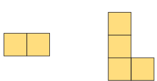
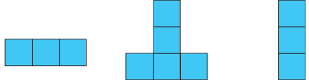
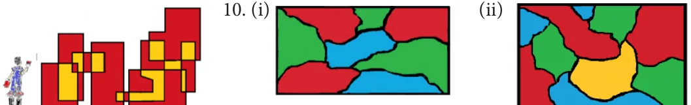

<!DOCTYPE html>
<html lang="en">
<head>
<meta charset="UTF-8">
<meta name="viewport" content="width=device-width,initial-scale=1">
<title>Answers — Appendix</title>
<meta name="description" content="Class 8 Mathematics · Appendix · Answers">
<link rel="icon" href="data:image/svg+xml,<svg xmlns='http://www.w3.org/2000/svg' viewBox='0 0 100 100'><text y='.9em' font-size='90'>📘</text></svg>">
<link rel="stylesheet" href="../../../assets/book.css">
<link rel="stylesheet" href="https://cdn.jsdelivr.net/npm/katex@0.16.11/dist/katex.min.css" crossorigin="anonymous">
</head>
<body>
<header class="topbar">
<div class="topbar-in">
  <div class="crumb">
    <span class="c1"><a href="../../../index.html">Library</a> · <a href="../../index.html">Class 8 Mathematics</a></span>
    <span class="c2">Appendix · Answers</span>
  </div>
  <a class="tb-btn" data-nav="prev" href="../../90-appendix/Class_8_Maths/index.html" title="Class 8 Maths">←</a>
  <details class="drawer"><summary class="tb-btn" title="Sections in this chapter">☰</summary>
<div class="drawer-panel"><div class="dh">Appendix</div><a href="../Class_8_Maths/index.html">Class 8 Maths</a><a href="../answers/index.html" aria-current="page">Answers</a></div></details>
  <span class="tb-btn" aria-disabled="true">→</span>
  <button class="tb-btn" data-theme-toggle title="Toggle light / dark" aria-label="Toggle light or dark theme">◐</button>
</div>
<div class="progress"><span style="width:100.0%"></span></div>
</header>
<main class="wrap">
<div class="sec-head">
  <p class="eyebrow"><a href="../index.html">Appendix · Appendix</a></p>
  <h1>Answers</h1>
  <p class="sec-meta">6 figures</p>
</div>
<article class="prose">
<figure class="fig wide"></figure>
<ul class="qlist">
<li><span class="mk">1.</span><span class="lt">NUMBERS</span></li>
</ul>
<h4 class="callout-h" id="s-exercise-1-1">Exercise 1.1</h4>
<ul class="qlist">
<li><span class="mk">1.</span><span class="lt">(i) \(- 4\) and \(- 3\) (ii) \(- 3.75\) (iii) 0 (iv) \(\frac{30}{ - 48}\) (v) \(\frac{ - 29}{39}\)</span></li>
</ul>
<p>2.(i) False (ii) True (iii) False (iv) True (v) True</p>
<ul class="qlist">
<li><span class="mk">3.</span><span class="lt">( )i \(- \frac{11}{3}\) (ii) \(\frac{ - 2}{5}\) (iii) \(\frac{7}{4} 4\). Y 3 ,N 3,A 4 ,T 4 ,I 4</span></li>
</ul>
<ul class="qlist">
<li><span class="mk">5.</span><span class="lt">\(\frac{9}{4}\)</span></li>
</ul>
<p>\(- 1 0 1 2 3\)</p>
<ul class="qlist">
<li><span class="mk">(ii)</span><span class="lt">\(\frac{ - 8}{3}\)</span></li>
</ul>
<p>\(- 3 - 2 - 1 0 1\)</p>
<ul class="qlist">
<li><span class="mk">(iii)</span><span class="lt">\(\frac{ - 1717}{ - 55} =\)</span></li>
</ul>
<p>\(- 1 0 1 2 3 4\)</p>
<ul class="qlist">
<li><span class="mk">(iv)</span><span class="lt">\(\frac{15}{ - 4}\)</span></li>
</ul>
<p>\(- 4 - 3 - 2 - 1 0 1\)</p>
<ul class="qlist">
<li><span class="mk">6.</span><span class="lt">(i) 0.0909... (ii) 3.25 (iii) \(- 2.5714285714\) (iv) 1.4 (v) \(- 3.5\)</span></li>
</ul>
<p>\(- 19 - 18 - 7 - 6 - 5 - 1 3 - 3 - 1 1 2 5\)</p>
<ul class="qlist">
<li><span class="mk">7.</span><span class="lt">(i) \(- 2\), \(0 \to\) , , , , (ii) , \(\to\) , ,0, , ,</span></li>
</ul>
<p>\(10 10 10 10 10 2 5 10 10 10 10 10 26 27 30 32 33 - 21 - 20 - 15 - 14 - 13\)</p>
<ul class="qlist">
<li><span class="mk">(iii)</span><span class="lt">0 25. , 0 35. \(\to\) , , , , (iv) \(- 1 2\). , \(- 2 3\). \(\to\) , , , ,</span></li>
</ul>
<p>100 100 100 100 100 10 10 10 10 10</p>
<ul class="qlist">
<li><span class="mk">8.</span><span class="lt">\(\frac{61103}{1530}\) and , many answers possible 9. (i) \(\frac{ - 11 - 21}{58} &gt;\) (ii) \(\frac{3 - 1}{ - 42} &lt;\) (iii) \(\frac{24}{35} &lt;\)</span></li>
</ul>
<p>\(- 11 - 15 - 5 12 - 7 - 7 12 - 5 - 15 - 11\)</p>
<ul class="qlist">
<li><span class="mk">10.</span><span class="lt">(i) Ascending Order: , , , , Descending Order: , , , ,</span></li>
</ul>
<p>\(8 24 12 36 - 9 - 9 36 12 24 8\)</p>
<ul class="qlist">
<li><span class="mk">(ii)</span><span class="lt">Ascending Order: \(\frac{ - 17 - 7 - 19 - 2}{105204}\) , , , ,0 Descending Order: 0, \(\frac{ - 2 - 19 - 7 - 17}{420510}\) , , ,</span></li>
<li><span class="mk">11.</span><span class="lt">(B) \(\frac{ - 142}{99} 12\). (B) \(\frac{16 - 8}{ - 3015}\) , 13. (C) \(- 1\) and \(- 2 14\). (A) \(\frac{ - 17}{24} 15\). (C) 6</span></li>
</ul>
<h4 class="callout-h" id="s-exercise-1-2">Exercise 1.2</h4>
<ul class="qlist">
<li><span class="mk">1.</span><span class="lt">(i) \(\frac{1}{20}\) (ii) 1 (iii) 1 (iv) 0 (v) \(- 1\)</span></li>
<li><span class="mk">2.</span><span class="lt">(i) True (ii) False (iii) False (iv) True (v) False</span></li>
<li><span class="mk">3.</span><span class="lt">(i) 2 (ii) \(\frac{74}{35}\) (iii) \(\frac{4}{15}\) (iv) \(2 \frac{3}{4} 4\). \(\frac{ - 15}{11} 5\). (i) \(\frac{ - 1}{4}\) (ii) \(\frac{8}{45}\)</span></li>
<li><span class="mk">6.</span><span class="lt">(i) \(- 6\) (ii) \(\frac{1}{13}\) (iii) 5 7. (i) \(- 7\) (ii) \(\frac{7}{11}\)</span></li>
<li><span class="mk">8.</span><span class="lt">\(\frac{231}{22} 11\)  and hence lies between 11 and 12. 9. (i) \(\frac{133}{60}\) (ii) \(\frac{ - 5}{2} 10\). 120</span></li>
</ul>
<ul class="qlist">
<li><span class="mk">11.</span><span class="lt">(A) 1 12. (C) \(\frac{5}{8} 13\). (B) \(\frac{2}{3} 14\). (D) \(\frac{15}{16} 15\). (D) all of these</span></li>
</ul>
<h4 class="callout-h" id="s-exercise-1-3">Exercise 1.3</h4>
<p>Verify yourself for Qns 1 to 6.</p>
<ul class="qlist">
<li><span class="mk">7.</span><span class="lt">(C) 0 8. (D) associative 9. (A) \(\frac{11}{88} - = 0 10\). (B) subtraction</span></li>
</ul>
<h4 class="callout-h" id="s-exercise-1-4">Exercise 1.4</h4>
<ul class="qlist">
<li><span class="mk">1.</span><span class="lt">(i) 9 (ii) 48 (iii) 5 (iv) 3 (v) 13, 14</span></li>
<li><span class="mk">2.</span><span class="lt">(i) True (ii) True (iii) False (iv) False (v) True</span></li>
<li><span class="mk">3.</span><span class="lt">(i) 289 (ii) 41209 (iii) 1205604 4. (i) No (ii) No (iii) Yes (iv) Yes</span></li>
<li><span class="mk">5.</span><span class="lt">(i) 12 (ii) 16 (iii) 28 (iv) 34 (v) 69 (vi) 95</span></li>
<li><span class="mk">6.</span><span class="lt">(i) 42 (ii) 83 (iii) 105 (iv) 134 (v) 647 7. (i) 21 (ii) 28 (iii) 32</span></li>
<li><span class="mk">8.</span><span class="lt">(i) 1.7 (ii) 8.2 (iii) 1.42 (iv) \(\frac{12}{15}\) (v) 2 7 9. 105, 81 10. 2, 60</span></li>
</ul>
<ul class="qlist">
<li><span class="mk">11.</span><span class="lt">(A) 9 12. (D) 7 13. (C) 7 14. (D) 32 15. (B) 5</span></li>
</ul>
<h4 class="callout-h" id="s-exercise-1-5">Exercise 1.5</h4>
<ul class="qlist">
<li><span class="mk">1.</span><span class="lt">(i) 7 (ii) 6 (iii) 42 (iv) 30 (v) 0.017</span></li>
<li><span class="mk">2.</span><span class="lt">(i) True (ii) True (iv) True (v) True 4. 5 5. 5 6. 120</span></li>
<li><span class="mk">7.</span><span class="lt">9,19 8. \(36 = 6 9\). \(\frac{(iii)\) False}{3} \(=1.732 10\). 4,16</span></li>
</ul>
<h4 class="callout-h" id="s-exercise-1-6">Exercise 1.6</h4>
<ul class="qlist">
<li><span class="mk">1.</span><span class="lt">(i) 1 (ii) 1 (iii) 20 (iv) \(\frac{ - 1}{128}\) (v) \(- 243\)</span></li>
</ul>
<p>\(- 3\)</p>
<ul class="qlist">
<li><span class="mk">2.</span><span class="lt">(i) True (ii) False (iii) False (iv) True (v) False</span></li>
<li><span class="mk">3.</span><span class="lt">(i) \(\frac{1}{8}\) (ii) 32 (iii) \(\frac{ - 216}{125}\) (iv) 16 (v) 6</span></li>
<li><span class="mk">4.</span><span class="lt">(i) \(\frac{64}{15625}\) (ii) \(\frac{4}{5}\) (iii) 1024 5. (i) \(\frac{21}{2}\) (ii) 5 (iii) 1</span></li>
<li><span class="mk">6.</span><span class="lt">(i) 1 (ii) \(\frac{3}{2}\) (iii) 72 7. (i) \(x = 5\) (ii) \(x = 6\)</span></li>
<li><span class="mk">8.</span><span class="lt"> (i) \(6 \times 10 + 5 \times 10 + 4 \times 10 + 3 \times 10 + 2 \times 10 + 1 \times 10\)</span></li>
</ul>
<p>3 1 0 ‒1 ‒2 -3</p>
<ul class="qlist">
<li><span class="mk">(ii)</span><span class="lt">\(8 \times 10 + 9 \times 10 + 7 \times 10 + 1 \times 10 + 4 \times 10\)</span></li>
</ul>
<p>2 1 0 ‒1 ‒2</p>
<ul class="qlist">
<li><span class="mk">9.</span><span class="lt">(i) 87652.0407 (ii) 5050.505 (iii) 0.000000000025</span></li>
<li><span class="mk">10.</span><span class="lt">(i) \(4.678 \times 10\) (ii) \(1.972 \times 10\) (iii) \(1.642398 \times 10\)</span></li>
</ul>
<p>11 ‒6 3</p>
<ul class="qlist">
<li><span class="mk">(iv)</span><span class="lt">\(1.083 \times 10\) cu. km (v) \(1.6 \times 10\)</span></li>
</ul>
<p>12 ‒24</p>
<ul class="qlist">
<li><span class="mk">11.</span><span class="lt">(B) \(\frac{ - 2}{5} 12\). (A) \(\frac{ - 1}{32} 13\). (D) -  \(\frac{1}{4}\) =16 14. (C) 6 15. (D) 2 02. \(\times 10\)</span></li>
</ul>
<aside class="sidenote"><p>\(2 - 1 - 10\)</p></aside>
<h4 class="callout-h" id="s-exercise-1-7">Exercise 1.7</h4>
<h4 class="callout-h" id="s-miscellaneous-practice-problems">Miscellaneous Practice Problems</h4>
<ul class="qlist">
<li><span class="mk">1.</span><span class="lt">4 kg 300 gm 2. \(10 \frac{2}{5}\) litre 3. both are correct 4. 6 m 5. \(552 cm^{2}\)</span></li>
<li><span class="mk">6.</span><span class="lt">9 cm and 10 cm 7. 15 decimetre 8. 625 9. 8</span></li>
<li><span class="mk">10.</span><span class="lt">(i) \(4.8 \times 10\) (ii) \(1.152 \times 10\) (iii) \(4.2048 \times 10\) (iv) \(4.2048 \times 10\)</span></li>
</ul>
<h4 class="callout-h" id="s-challenging-problems">Challenging Problems</h4>
<ul class="qlist">
<li><span class="mk">11.</span><span class="lt">900 km 13. 320 gm 14. \(\frac{9}{20} 15\). \(x = 3 16\). \(\frac{12}{11} 17\). No, 64</span></li>
<li><span class="mk">18.</span><span class="lt">58.85 19. \(7.979 \times 10 20\). 8 , 2 , 3 , 4 , 16</span></li>
</ul>
<ul class="qlist">
<li><span class="mk">2.</span><span class="lt">MEASUREMENTS</span></li>
</ul>
<h4 class="callout-h" id="s-exercise-2-1">Exercise 2.1</h4>
<ul class="qlist">
<li><span class="mk">1.</span><span class="lt">( )i p (ii) chord (iii) diameter (iv) 12 cm (v) circular arc</span></li>
<li><span class="mk">2.</span><span class="lt">(i) c (ii) d (iii) e (iv) b (v) a</span></li>
</ul>
<p>3.</p>
<figure class="fig table-fig wide"></figure>
<p>4.</p>
<div class="mathblock"><p>\(\frac{(ii)}{5\). (i) \(240} m^{2}\) (ii) \(337.5 cm^{2}\) . ( ) \(= ^{\circ}\) ( ) 7.</p></div>
<ul class="qlist">
<li><span class="mk">8.</span><span class="lt">9. 706.5 cm (approximately) 10. 1232 cm (approximately)</span></li>
</ul>
<h4 class="callout-h" id="s-exercise-2-2">Exercise 2.2</h4>
<ul class="qlist">
<li><span class="mk">1.</span><span class="lt">(i) 38 m, 50.75 m (approximately) (ii) 30 cm,40.25 cm (approximately)</span></li>
</ul>
<ul class="qlist">
<li><span class="mk">2.</span><span class="lt">(i) 21.5 cm (approximately) (ii) 27.93 cm (approximately)</span></li>
</ul>
<ul class="qlist">
<li><span class="mk">3.</span><span class="lt">48 cm 4. 41.13 cm (approximately) 5. 5600 cm 6. 3500 cm 7. 244 m</span></li>
</ul>
<h4 class="callout-h" id="s-exercise-2-3">Exercise 2.3</h4>
<ul class="qlist">
<li><span class="mk">1.</span><span class="lt">(i) length, breadth and height (ii) Vertex (iii) Six (iv) Circle (v) Cube</span></li>
<li><span class="mk">2.</span><span class="lt">(i) (b) (ii) (a) (iii) (d) (iv) (c)</span></li>
<li><span class="mk">3.</span><span class="lt">(i) Cube (ii) Cuboid (iii) Triangular Prism (iv) Square Pyramid (v) Cylinder</span></li>
<li><span class="mk">4.</span><span class="lt">(i) F, T, S (ii) T, S, F (iii) S, F, T</span></li>
<li><span class="mk">5.</span><span class="lt">(i) Yes (ii) No (iii) Yes (iv) No (v) Yes</span></li>
</ul>
<p>Exercise 2.4 Miscellaneous Practice Problems</p>
<ul class="qlist">
<li><span class="mk">1.</span><span class="lt">9.42 feet 2. 314 m 3. 128</span></li>
<li><span class="mk">4.</span><span class="lt">(i) Top View Front View Side View Top View Front View Side View</span></li>
</ul>
<figure class="fig side-fig"></figure>
<figure class="fig"></figure>
<h4 class="callout-h" id="s-challenging-problems">Challenging Problems</h4>
<ul class="qlist">
<li><span class="mk">5.</span><span class="lt">double door requires the minimum area 6. 63.48 m (approximately)</span></li>
</ul>
<ul class="qlist">
<li><span class="mk">7.</span><span class="lt">1.46 cm (approximately) 8. (i) \(F = 10\) (ii) \(V = 4\) (iii) \(E= 28\)</span></li>
</ul>
<ul class="qlist">
<li><span class="mk">3.</span><span class="lt">ALGEBRA</span></li>
</ul>
<h4 class="callout-h" id="s-exercise-3-1">Exercise 3.1</h4>
<ul class="qlist">
<li><span class="mk">1.</span><span class="lt">\(x 2x^{2} - 2xy x^{4}y^{3}\) 2xyz \(- 5xz^{2}\)</span></li>
</ul>
<p>\(x 2x - 2x y x y 2x\) yz \(- 5x z\)</p>
<p>\(4xy 8x y - 8x y 4x y 8x y z - 20x\) yz</p>
<p>\(- x y - 2x y 2x y - x y - 2x y z 5x\) yz</p>
<p>\(2y z 4x y z - 4xy z 2x y z 4xy z - 10xy z\)</p>
<p>- 3xyz \(- 6x\) yz \(6x y z - 3x y z - 6x y z 15x\) yz</p>
<ul class="qlist">
<li><span class="mk">2.</span><span class="lt">\(\frac{ - 7z}{(i)24m4n2}\) (ii) \(- 9x y 3\). \(- 24p q\)</span></li>
</ul>
<p>\(- 14x z\) 14xyz \(- 7x y z -\) 14xyz 35xz</p>
<ul class="qlist">
<li><span class="mk">4.</span><span class="lt">(i) \(10xy - 15x\) (ii) \(- 10p + 6p - 14p\) (iii) \(3m n - 15m n + 21m n\)</span></li>
</ul>
<ul class="qlist">
<li><span class="mk">(iv)</span><span class="lt">\(x + y - z + x y + x z +\) xy + zy + xz - yz 5. (i) \(4x - 2x - 12\)</span></li>
</ul>
<ul class="qlist">
<li><span class="mk">(ii)</span><span class="lt">\(2y + 3y - 8y - 12y\) (iii) 5m n m n 5m n n (iv) 6x 36x 30</span></li>
</ul>
<ul class="qlist">
<li><span class="mk">6.</span><span class="lt">(i) \(- 2x\) ii) \(- 3mp\) iii) \(2y(5x y - x + 3y\) ) 7. (C) iv, v, ii, iii, i 8. xy \(+ 2x + 30y + 60\)</span></li>
</ul>
<ul class="qlist">
<li><span class="mk">9.</span><span class="lt">(B) \(28p^{7} 10\). (D) \(mn^{2}\), \(- 27 11\). (C) \(6x^{2}y 12\). (A) 6 mn 13. (B) (a+b)</span></li>
</ul>
<h4 class="callout-h" id="s-exercise-3-2">Exercise 3.2</h4>
<div class="mathblock"><p>\(\frac{18m(n)}{2m(3)n3} 2lm n 2 \frac{42ab(c)}{6(a)4(b)2}\)</p></div>
<p>4 8 4 5 (7) 3 2 4 5 2</p>
<p>_{5} l m n l m n _{3} _{2}</p>
<ul class="qlist">
<li><span class="mk">1.</span><span class="lt">(i) \(= 9mn\) (ii) \(_{(}_{3}_{)} _{6} =\) (iii) \(= (7)b c\)</span></li>
<li><span class="mk">2.</span><span class="lt">(i) True (ii) False 3. (i) 9y (ii) xy (iii) \(- 3x y z\) (iv) x y</span></li>
</ul>
<div class="mathblock"><p>\(2 \frac{1}{2} \frac{5}{6}\)</p></div>
<ul class="qlist">
<li><span class="mk">4.</span><span class="lt">(i) 5m (ii) 3p q 5. \((i)16 y - 4z (ii)2mn +8m n -\) (iii) y 3xy 1</span></li>
</ul>
<ul class="qlist">
<li><span class="mk">(iv)</span><span class="lt">\(= 9p r +18pq - 45\)</span></li>
<li><span class="mk">6.</span><span class="lt">(i) \(9y^{2}\) (ii) 9 xy (iii) \(4m^{2} - 3m (iv)16n^{2} - 2n+3\) (v) \(x^{2} +1x - 6\) (vi) \(- (3p^{2} - 4p + 7)\)</span></li>
<li><span class="mk">7.</span><span class="lt">(ii) A is true but B is false 8. (i) both A and B are true</span></li>
</ul>
<h4 class="callout-h" id="s-exercise-3-3">Exercise 3.3</h4>
<ul class="qlist">
<li><span class="mk">1.</span><span class="lt">\((i)9m + 30m + 25 (ii)25p - 10p +1\) (iii)4n \(+ 4n - 3 (iv)(2p + 5q)(2p - 5q)\)</span></li>
</ul>
<ul class="qlist">
<li><span class="mk">2.</span><span class="lt">(i)m \(+ 9m + 27m + 27\) (ii) \(8a + 60a +150a +125\) (iii) \(27p +108p q +144pq + 64q\)</span></li>
</ul>
<ul class="qlist">
<li><span class="mk">(iv)</span><span class="lt">14,0608 (v) 1124864</span></li>
<li><span class="mk">3.</span><span class="lt">(i) \(125 - 75x +15x - x\) (ii) \(8x - 48x y + 96xy - 64y\) (iii) \(a b - 3a b c +\) 3abc \(- c\)</span></li>
</ul>
<ul class="qlist">
<li><span class="mk">(iv)</span><span class="lt">110, 592 (v) 912673x y</span></li>
</ul>
<ul class="qlist">
<li><span class="mk">4.</span><span class="lt">\(p - 5p + 2p +8 5\). \(x + 3x + 3x +1 6\). \(x - 2x - 5x + 6\)</span></li>
</ul>
<ul class="qlist">
<li><span class="mk">7.</span><span class="lt">(C) 2 8. (B) \(a +\) ab \(+ b 9\). (A) \(p + q 10\). (D) 72 11. (D) 3ab(a+b)</span></li>
</ul>
<h4 class="callout-h" id="s-exercise-3-4">Exercise 3.4</h4>
<ul class="qlist">
<li><span class="mk">1.</span><span class="lt">(i) \(6y(3x - 2z)\) (ii) \(3x y(3x y + 2xy - 6)\) (iii) (b \(- 2c)(x +\) y)</span></li>
</ul>
<ul class="qlist">
<li><span class="mk">(iv)</span><span class="lt">(x + y)(a + b) (v) \((4x - 1)(2x - 1)\) (vi) (x \(- 2)[3y(x - 2) + 2]\)</span></li>
</ul>
<ul class="qlist">
<li><span class="mk">(vii)</span><span class="lt">\(2y(9x - 2y -\) zx) (viii) (a \(- 3)(a +1)\) (ix) \(3y(y + 4)(y - 4)\) (x) (b \(- 1)(ab - c\) )</span></li>
</ul>
<ul class="qlist">
<li><span class="mk">2.</span><span class="lt">(i) (x \(+ 7)\) (ii) (y \(- 5)\) (iii) (c \(+ 2)(c - 6)\)</span></li>
</ul>
<ul class="qlist">
<li><span class="mk">(iv)</span><span class="lt">(m \(+ 9)(m - 8)\) (v) \((2x - 3)(2x - 1) 3\). ( )i (4x +3) (ii) \((3p + 2q)\)</span></li>
</ul>
<ul class="qlist">
<li><span class="mk">4.</span><span class="lt">( )i (y \(- 6)\) (ii) \((2m - 5n) 5\). (D) 3x, (3x+2y) 6. (C) \((2+m)(2 -\) m)</span></li>
</ul>
<ul class="qlist">
<li><span class="mk">7.</span><span class="lt">(D) \(x - x - 20 8\). (B) 3 9. (C) \((1 - m)(1+m+m\) ) 10. (B) (x+y)</span></li>
</ul>
<p>Exercise 3.5 Miscellaneous Practice Problems</p>
<div class="mathblock"><p>\(\frac{7}{5}\)</p><p>\(1.7x y + 4x y + 60x y 2 12\). \(x - 8x + 27x - 18 3\). S I. \(= a b\)</p></div>
<div class="mathblock"><p>\(\frac{1}{2}\)</p></div>
<ul class="qlist">
<li><span class="mk">4.</span><span class="lt">\(a + 2b + 4 5\). (y \(- 3)(7y + 2)\)</span></li>
</ul>
<h4 class="callout-h" id="s-challenging-problems">Challenging Problems</h4>
<ul class="qlist">
<li><span class="mk">6.</span><span class="lt">\(4x + 3 7\). \(x + 2 8\). (y \(+ 7)(y +8) 9\). \((4p +1)(2p +1)(2p - 1) 10\). \(3(x - 5y)\)</span></li>
</ul>
<h4 class="callout-h" id="s-exercise-3-6">Exercise 3.6</h4>
<ul class="qlist">
<li><span class="mk">1.</span><span class="lt">(i) \(x = 7\) (ii) \(y = 11\) (iii) \(m = 7\) (iv) \(p = 15\) (v) One</span></li>
<li><span class="mk">2.</span><span class="lt">(i) True (ii) False 3. (c) (iii),(i), (iv), (v), (ii)</span></li>
<li><span class="mk">4.</span><span class="lt">(i) \(x = 11\) (ii) \(y =\) (iii) \(x = - 1 5\). (i) \(x = - 4\) (ii) \(p = - 1\) (iii) \(x = - 11\)</span></li>
</ul>
<div class="mathblock"><p>\(\frac{1}{ - 4}\)</p></div>
<ul class="qlist">
<li><span class="mk">6.</span><span class="lt">(i) \(x = - 2\) (ii) \(m = - 4\)</span></li>
</ul>
<h4 class="callout-h" id="s-exercise-3-7">Exercise 3.7</h4>
<ul class="qlist">
<li><span class="mk">1.</span><span class="lt">(i). \(x = - \frac{b}{a}\) (ii) Positive (iii) \(x = 30\) (iv) \(40 ^{\circ}\) (v) b=9</span></li>
<li><span class="mk">2.</span><span class="lt">(i) True (ii) False (iii) False 3. 3, 21 4. 27</span></li>
<li><span class="mk">5.</span><span class="lt">l \(= 8\) cm, 6. (80,10) notes 7. Murali’s is 15 years old, 8. 63 9.</span></li>
</ul>
<p>\(b = 24\) cm Thenmozhi’s age is 20 years old \(\frac{13}{21}\)</p>
<ul class="qlist">
<li><span class="mk">10.</span><span class="lt">37.4km 11. (B) 20 12. (A) \(62 ^{\circ} 13\). (C) 10000 14. (C) 4 15. (D) (x \(- 1)\)</span></li>
</ul>
<h4 class="callout-h" id="s-exercise-3-8">Exercise 3.8</h4>
<ul class="qlist">
<li><span class="mk">1.</span><span class="lt">(i) Origin (0,0) (ii) negative (iii) y-axis (iv) zero (v) X-Coordinate</span></li>
<li><span class="mk">2.</span><span class="lt">(i) True (ii) True (iii) False</span></li>
</ul>
<h4 class="callout-h" id="s-exercise-3-9">Exercise 3.9</h4>
<ul class="qlist">
<li><span class="mk">1.</span><span class="lt">(i) Origin (ii) (4,-4) (iii) x-axis 1cm=3 units, y-axis 1cm=25 units</span></li>
<li><span class="mk">2.</span><span class="lt">(i) True (ii) False</span></li>
</ul>
<p>Exercise 3.10 Miscellaneous Practice Problems</p>
<ul class="qlist">
<li><span class="mk">1.</span><span class="lt">\(x = 20 2\). \(60 ^{\circ}\) , \(40 ^{\circ}\) , \(80 ^{\circ} 3\). \(y = 11\) units p=133 units 4. \(116 ^{\circ} ,64 ^{\circ}\)</span></li>
</ul>
<h4 class="callout-h" id="s-challenging-problems">Challenging Problems</h4>
<ul class="qlist">
<li><span class="mk">6.</span><span class="lt"> 7,8,9 7. 54 8. 12 pencils</span></li>
<li><span class="mk">4.</span><span class="lt">LIFE MATHEMATICS</span></li>
</ul>
<h4 class="callout-h" id="s-exercise-4-1">Exercise 4.1</h4>
<ul class="qlist">
<li><span class="mk">1.</span><span class="lt">(i) \(x = 500\) (ii) \(3 \frac{1}{3}\) % (iii) \(x = 50\) (iv) 70% (v) 52.52%</span></li>
<li><span class="mk">2.</span><span class="lt">(i) 50% (ii) 75% (iii) 100% (iv) 96% (v) \(66 \frac{2}{3}\) %</span></li>
<li><span class="mk">3.</span><span class="lt">\(x = 150 4\). 30 5. \(33 \frac{1}{3}\) % 6. 110 7. \(x = 200 8\). \(x = 100 9\). No change</span></li>
<li><span class="mk">10.</span><span class="lt">87% 11. (C) 20% 12. (B) 49% 13. (A) 375 14. (D) 200 15. (D) 36</span></li>
</ul>
<h4 class="callout-h" id="s-exercise-4-2">Exercise 4.2</h4>
<ul class="qlist">
<li><span class="mk">1.</span><span class="lt">(i) Cost price (ii) ₹7000 (iii) ₹600 (iv) 8% (v) ₹945</span></li>
<li><span class="mk">2.</span><span class="lt">₹900 3. ₹670 4. 50% 5. \(11 \frac{1}{9}\) % 6. ₹1152</span></li>
<li><span class="mk">7.</span><span class="lt">(i) \(x =\) ₹207 (ii) \(y =\) ₹12600 (iii) \(z = 18% 8\). ₹2836</span></li>
<li><span class="mk">9.</span><span class="lt">Discount of 8% is better 10. ₹5400</span></li>
<li><span class="mk">11.</span><span class="lt">(C) 25% 12. (B) 550 13. (C) ₹176.40 14. (D) ₹250 15. (A) 40%</span></li>
</ul>
<h4 class="callout-h" id="s-exercise-4-3">Exercise 4.3</h4>
<ul class="qlist">
<li><span class="mk">1.</span><span class="lt">(i) ₹1272 (ii) ₹820 (iii) ₹20,000 (iv) \(A = P\) 1+ \(400r ^{4}^{n}\) (v) ₹32</span></li>
<li><span class="mk">2.</span><span class="lt">(i) True (ii) False (iii) True (iv) False (v) True</span></li>
<li><span class="mk">3.</span><span class="lt">₹162 4. ₹1082 5. ₹1875 6. \(1 \frac{1}{2}\) years 7. ₹10,875 8. ₹0.50</span></li>
<li><span class="mk">9.</span><span class="lt">5% 10. ₹ 16000 11. (C) 6 12. (B) 1 year 13. (B) ₹ 12500</span></li>
<li><span class="mk">14.</span><span class="lt">(A) ₹2000 15. (D) ₹2500</span></li>
</ul>
<h4 class="callout-h" id="s-exercise-4-4">Exercise 4.4</h4>
<ul class="qlist">
<li><span class="mk">1.</span><span class="lt">(i) 2 (ii) 5 (iii) 8 (iv) 25 (v) ₹1,20,000 2. 162 men</span></li>
<li><span class="mk">3.</span><span class="lt">7000 cement bags 4. \(7 \frac{1}{2}\) days 5. 4 more lorries 6. 4 hours</span></li>
<li><span class="mk">7.</span><span class="lt">A- 30 days, B -20 days, C-60 days 8. 180 minutes 9. 16 days 10. 6 days</span></li>
</ul>
<p>Exercise 4.5 Miscellaneous Practice Problems</p>
<ul class="qlist">
<li><span class="mk">1.</span><span class="lt">400 2. 300 3. `41013 4. 20% 5. \(2 \frac{2}{9}\) % loss 6. 48 men 7. 6 days 8. 8 days</span></li>
</ul>
<h4 class="callout-h" id="s-challenging-problems">Challenging Problems</h4>
<ul class="qlist">
<li><span class="mk">9.</span><span class="lt">\(\frac{8}{25} 10\). `15000 11. 20 % 12. 30 % 13. 40 men 14. 3 days 15. ` 6000</span></li>
<li><span class="mk">5.</span><span class="lt">GEOMETRY</span></li>
</ul>
<h4 class="callout-h" id="s-exercise-5-1">Exercise 5.1</h4>
<ul class="qlist">
<li><span class="mk">1.</span><span class="lt">(i) in proportion (ii) shape (iii) equal (iv) congruent (v) similar</span></li>
<li><span class="mk">6.</span><span class="lt">Yes, RHS Congruence 8. \(HE =18,TE =16 9\). \(\angle T = \angle N = 75 ^{\circ}\) , \(\angle E = \angle B = 35 ^{\circ}\) , \(\angle A = \angle U = 70 ^{\circ}\)</span></li>
<li><span class="mk">11.</span><span class="lt">(D) matching 12. (A) Q Y 13. (D) 93 m 14. (A) 50 15. (C) \(AC = CD\)</span></li>
</ul>
<h4 class="callout-h" id="s-exercise-5-2">Exercise 5.2</h4>
<ul class="qlist">
<li><span class="mk">1.</span><span class="lt">(i) Q (ii) \(n - m\) (iii) a right angled triangle (iv) centroid (v) 2:1</span></li>
</ul>
<ul class="qlist">
<li><span class="mk">2.</span><span class="lt">(i) True (ii) True (iii) True (iv) True (v) False</span></li>
<li><span class="mk">3.</span><span class="lt">(i) Yes (ii) No (iii) Yes (iv) Yes (v) Yes</span></li>
</ul>
<div class="mathblock"><p>4 (i) \(x = 41\) (ii) \(y = 16\) (iii) \(z = 15 5\). 5cm 6. 170m</p></div>
<ul class="qlist">
<li><span class="mk">7.</span><span class="lt">10cm 8. W 9. P 10. 9cm 11. \(40 ^{\circ}\)</span></li>
<li><span class="mk">12.</span><span class="lt">(C) \(45 ^{\circ} 13\). (B) 20cm 14. (C) 420cm 15.(D) 20, 48, 52</span></li>
</ul>
<p>Exercise 5.3 Miscellaneous Practice Problems</p>
<ul class="qlist">
<li><span class="mk">3.</span><span class="lt">48 ft 4. 25 ft 5. No, the wide of cabinet is lesser than the wide of TV</span></li>
</ul>
<h4 class="callout-h" id="s-challenging-problems">Challenging Problems</h4>
<ul class="qlist">
<li><span class="mk">8.</span><span class="lt">40cm 9. 28 ft 10. (i) 22 (ii) 6 (iii) 16 (iv) 24</span></li>
<li><span class="mk">6.</span><span class="lt">STATISTICS</span></li>
</ul>
<h4 class="callout-h" id="s-exercise-6-1">Exercise 6.1</h4>
<ul class="qlist">
<li><span class="mk">1.</span><span class="lt">(i) Secondary (ii) 35 (iii)197 (iv) 8 (v) Circular</span></li>
<li><span class="mk">2.</span><span class="lt">(i) False (ii) True (iii) True (iv) True</span></li>
<li><span class="mk">5.</span><span class="lt">(i) 20% (ii) 75 (iii) 1/4 (iv) 400 (v) 275 (vi) 500</span></li>
<li><span class="mk">8.</span><span class="lt">(i) ₹8000 (ii) ₹40000 (iii) ₹12000</span></li>
</ul>
<h4 class="callout-h" id="s-exercise-6-2">Exercise 6.2</h4>
<ul class="qlist">
<li><span class="mk">1.</span><span class="lt">(i) Yes (ii) No (iii) No (iv) Yes (v) Yes</span></li>
<li><span class="mk">2.</span><span class="lt">(i) Proportional (ii) Histogram (iii) Grouped</span></li>
<li><span class="mk">3.</span><span class="lt">(i) 330 (ii) 150 (iii) No</span></li>
<li><span class="mk">9.</span><span class="lt">(D) all the three 10. (C) Frequency 11. (A) range 12. (B) grouped</span></li>
<li><span class="mk">13.</span><span class="lt">(B) discontinuous 14. (B) Exclusive 15. (C) pie chart 16. (A) continuous</span></li>
<li><span class="mk">17.</span><span class="lt">(A) frequency polygon 18. (D) histogram</span></li>
<li><span class="mk">7.</span><span class="lt">INFORMATION PROCESSING</span></li>
</ul>
<h4 class="callout-h" id="s-exercise-7-1">Exercise 7.1</h4>
<ul class="qlist">
<li><span class="mk">1.</span><span class="lt">5 2. 9 3. 8 4. 6 5. 4995 6. 10000 7. 15 8. 20</span></li>
<li><span class="mk">9.</span><span class="lt">(i)</span></li>
</ul>
<figure class="fig wide"></figure>
<p>more possible ways more possible ways</p>
<ul class="qlist">
<li><span class="mk">11.</span><span class="lt">(A) 41 12. (B) 8 13. (D) 64 14. (C) 19</span></li>
</ul>
<h4 class="callout-h" id="s-exercise-7-2">Exercise 7.2</h4>
<ul class="qlist">
<li><span class="mk">1.</span><span class="lt">(i) 13 (ii) 8 (iii) 5 (iv) 46</span></li>
<li><span class="mk">2.</span><span class="lt">(i) 14 (ii) 4 (iii) 140 (iv) 6</span></li>
<li><span class="mk">3.</span><span class="lt">(i) 4 (ii) 5 4. 14 5. (C) 89</span></li>
<li><span class="mk">6.</span><span class="lt">(B) \(F(8) = F(7)+F(6) 7\). (A) 2 8. (C) 6th 9. (D) 987</span></li>
<li><span class="mk">10.</span><span class="lt">(A) 2 and 5 11. (D) 3, 2 and 2 12. (D) 1</span></li>
</ul>
<h4 class="callout-h" id="s-exercise-7-3">Exercise 7.3</h4>
<ul class="qlist">
<li><span class="mk">1.</span><span class="lt">(i) TAMIL (ii) ENGLISH (iii) MATHEMATICS</span></li>
<li><span class="mk">(iv)</span><span class="lt">SCIENCE (v) SOCIAL SCIENCE</span></li>
</ul>
<p>2 (i) c (ii) \(d \frac{(iii)\) a}{E} \(\frac{(iv)\) e}{J} \(\frac{(v)\) b}{N}</p>
<ul class="qlist">
<li><span class="mk">3.</span><span class="lt">\(\frac{Plain\) Text}{Cipher Text} \(\frac{A}{04} \frac{B}{05} \frac{C}{06} \frac{D}{07} 08 \frac{F}{09} \frac{G}{10} \frac{H}{11} \frac{I}{12} 13 \frac{K}{14} \frac{L}{15} \frac{M}{16} 17 \frac{O}{18} \frac{P}{19} \frac{Q}{20} \frac{R}{21} \frac{S}{22} \frac{T}{23} \frac{U}{24} \frac{V}{25} \frac{W}{00} \frac{X}{01} \frac{Y}{02} \frac{Z}{03}\)</span></li>
<li><span class="mk">4.</span><span class="lt">To understand that mathematics can be experienced everywhere in nature and real life.</span></li>
<li><span class="mk">5.</span><span class="lt">(i) 28 (ii) CHAIR (iii) GIFT VOUCHER</span></li>
<li><span class="mk">6.</span><span class="lt">(C) [T N 1 2 H 2 5 8 9] 7. (i) (A) C R D T (ii) (D) A D G J</span></li>
<li><span class="mk">8.</span><span class="lt">(ii) 5 6 3 4 2 1 9. (i) (C) R F U Q N P C (ii) (C) U D G L R</span></li>
</ul>
<h4 class="callout-h" id="s-exercise-7-4">Exercise 7.4</h4>
<ul class="qlist">
<li><span class="mk">1.</span><span class="lt">(i) 5 Chocolate bars for ` 175b (ii) 15 eggs for ` 64.50</span></li>
<li><span class="mk">2.</span><span class="lt">` 634 3. ` 39.25 4. ` 809 5. (D) all the above</span></li>
<li><span class="mk">6.</span><span class="lt">(C) something that I need to purchase</span></li>
<li><span class="mk">7.</span><span class="lt">(B) Compare the choices before buying</span></li>
</ul>
<figure class="fig table-fig wide"></figure>
<h2 id="s-mathematics-class-8-text-book-development-team-reviewers-a">Mathematics - Class 8 Text Book Development Team Reviewers Academic Advisor Dr. R. Ramanujam Dr. P. Kumar</h2>
<p>Professor, Joint Director (Syllabus), Institute of Mathematical Science, SCERT, Chennai. Chennai.</p>
<h2 id="s-academic-co-ordinator-r-athmaraman-v-ilayarani-mohan">Academic Co-ordinator R. Athmaraman V. Ilayarani Mohan</h2>
<p>Educational Consultant, Assistant Professor, Association of Mathematics Teachers of India, SCERT, Chennai. Chennai.</p>
<h2 id="s-art-and-design-team">Art and Design Team</h2>
<p>Content Writers Layout and Illustration</p>
<p>G. KamalanathanB.T. Assistant, B. Yogesh, C. Prasanth, A. Adison GHSS, Arpakkam, R. Mathan Raj, Sridhar Velu</p>
<p>Kancheepuram. In-House QC</p>
<h2 id="s-k-gunasekar-p-arun-kamaraj">K. Gunasekar P. Arun Kamaraj</h2>
<p>B.T. Assistant, Wrapper Design PUMS, Vallavanur West, Kathir Aarumugam Koliyanur Block,</p>
<p>Villupuram. Layout Co-ordinator</p>
<h2 id="s-g-palani-ramesh-munisamy">G.Palani Ramesh Munisamy</h2>
<p>B.T. Assistant,</p>
<p>GHS, Jagadab, EMIS Technology Team</p>
<p>Krishnagiri. R.M. Satheesh, State Coordinator Technical, TN EMIS, Samagra Shiksha.</p>
<p>P. Malarvizhi K.P. Sathya Narayana, IT Consultant,</p>
<p>B.T. Assistant, TN EMIS, Samagra Shiksha. Chennai High School, Strahans Road, Pattalam, Chennai. R. Arun Maruthi Selvan, Technical Project Consultant, TN EMIS, Samagra Shiksha.</p>
<h2 id="s-ict-coordinator-d-vasuraj">ICT Coordinator D. Vasuraj</h2>
<p>P.G. Assistant, KRM Public School,</p>
<p>This book has been printed on 80 GSM Sembiyam, Chennai. Elegant Maplitho paper Printed by offset at :</p>
<h2 id="s-typist-k-punitha">Typist K. Punitha</h2>
<p>Triplicane, Chennai.</p>
</article>
<nav class="pager"><a class="" data-nav="prev" href="../../90-appendix/Class_8_Maths/index.html"><span class="dir">← Previous</span><span class="t">Class 8 Maths</span><span class="ch">Appendix</span></a><span></span></nav>
</main><footer class="site">Generated from the source textbook PDFs · text, figures and exercises belong to their respective publishers.</footer><script defer src="https://cdn.jsdelivr.net/npm/katex@0.16.11/dist/katex.min.js" crossorigin="anonymous"></script>
<script defer src="https://cdn.jsdelivr.net/npm/katex@0.16.11/dist/contrib/auto-render.min.js" crossorigin="anonymous"
  onload="renderMathInElement(document.body,{delimiters:[
    {left:'\\(',right:'\\)',display:false},
    {left:'$$',right:'$$',display:true},
    {left:'\\[',right:'\\]',display:true}],throwOnError:false,ignoredTags:['script','noscript','style','textarea','pre','code']})"></script>
<script src="../../../assets/book.js"></script>
</body>
</html>
